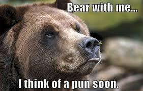
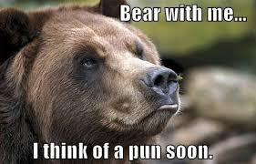

My name is Griffin Abercrombie and as the resident jokester in my family, I have always been one for puns. No one else in my family understands the comedic genuis that is a great pun. Personally, the funniest thing to me is a pun that is cleverly placed in natural conversation.

 

List of my Favorite Puns
1) I got a job working in a hayfield. After one day I bailed.
2) Yesterday I accidentally swallowed some food coloring. The doctor says I'm OK, but I feel like I've dyed a little inside.
3) Did you hear about the guy whose whole left side was cut off? He's all right now.
4) I wondered why the baseball was getting bigger. Then it hit me.
5) Have you ever tried to eat a clock? It's very time consuming.
| Good | Great | Perfect |
|---|---|---|
| Sort of funny | Funny | Knee Slapper |
| No animal | Has an Animal | Bear Related |